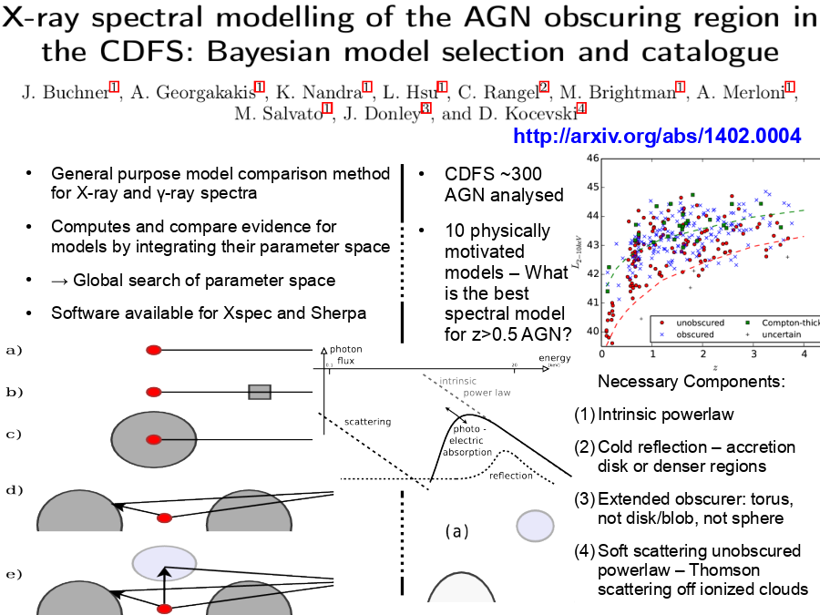

0.5 AGN? Necessary Components: Intrinsic powerlaw Cold reflection – accretion disk or denser regions Extended obscurer: torus, not disk/blob, not sphere Soft scattering unobscured powerlaw – Thomson scattering off ionized clouds">